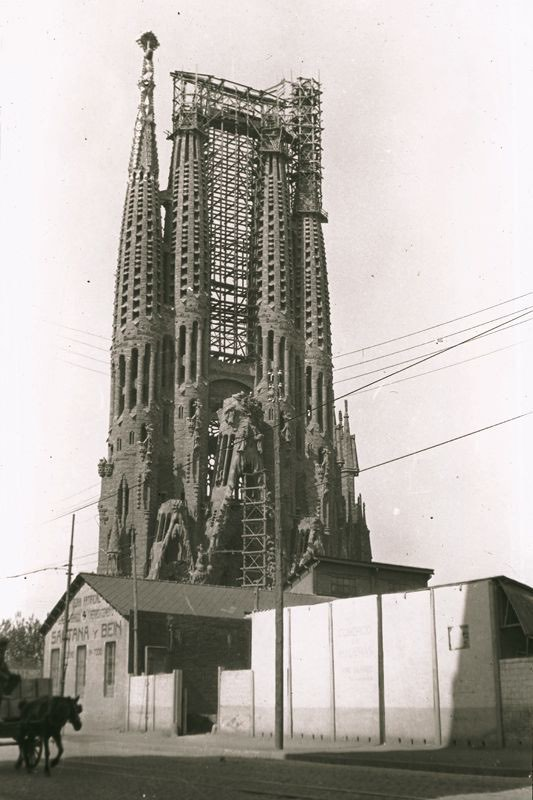

Když se dnes díváme na chrám Sagrada Família, snadno zapomeneme, že po většinu své výstavby vznikala bez elektřiny, bez počítačů a bez moderních strojů.
A přesto stojí.
Jak se stavělo na samém začátku
Když v roce 1883 převzal Antoni Gaudí vedení projektu stavby, stavělo se téměř výhradně ručně. Základním materiálem byl kvalitní pískovec z kopce Montjuïc, tedy kámen, z něhož je postavena velká část historické Barcelony. Je pevný, dobře opracovatelný a má typickou teplou barvu, kterou dnes poznáme hlavně na nejstarších částech chrámu.
Kámen se opracovával přímo na místě, bez prefabrikace a bez jeřábů v dnešním slova smyslu. Všechno postupovalo pomalu – ale s obrovskou precizností. Každý blok prošel rukama kameníků, kteří pracovali s dláty, kladivy a šablonami.
Dobře to ilustruje první dokončená věž chrámu.
Tou byla věž sv. Barnabáše na fasádě Narození Páně – jediná věž, kterou Gaudí za svého života viděl dokončenou. Stavěla se přibližně od roku 1894 do roku 1925, tedy více než 30 let, a měří zhruba 98 metrů.
Třicet let práce na jediné věži dnes zní neuvěřitelně. Ale právě takové tempo odpovídalo Gaudího představě: stavět pomalu, s respektem k materiálu i ke smyslu celé stavby.
Gaudí navíc pracoval úplně jinak než většina architektů své doby. Prakticky nepoužíval klasické technické výkresy.
Místo toho modeloval.
A právě tady se dostáváme k jednomu z nejzajímavějších technických momentů celé Sagrady.
Jak Gaudí „počítal" nosnost chrámu
Gaudí byl přesvědčený, že příroda je nejlepší statik. A tak ji nechal počítat za sebe.
Místo složitých výpočtů a tabulek používal fyzické modely. Ze stropu nechával viset provázky, na jejichž koncích byly přivázané malé pytlíčky se zátěží – nejčastěji s pískem nebo olovem. Tyto váhy simulovaly zatížení budoucí stavby. Působením gravitace se provázky samy uspořádaly do křivek, po kterých se přirozeně a nejefektivněji rozkládá váha.
Když se takový model otočil vzhůru nohama, vznikl ideální tvar oblouků a kleneb – stabilní konstrukce, která nepotřebovala masivní opěrné zdi. Gaudí si modely fotografoval, někdy je pozoroval pomocí zrcadel, a z těchto obrazů pak vycházel při navrhování skutečné stavby.
To bylo zásadní, protože Gaudí chtěl, aby byl chrám inspirovaný přírodou nejen zvenčí, ale i uvnitř. Sloupy neměly být mohutné a těžké jako v tradičních katedrálách, ale štíhlé, rozvětvené, připomínající kmeny stromů. Takový interiér působí lehce a vzdušně, ale klade obrovské nároky na přesné rozložení zatížení.
Čím tenčí sloupy, tím pečlivěji musela být nosnost promyšlená. A právě tady se Gaudího metoda ukázala jako geniální – místo toho, aby s přírodou bojoval, nechal ji pracovat za sebe.
Díky tomu mohl navrhnout interiér, který nepotřebuje masivní stěny – a Sagrada Familia se tak zevnitř podobá spíš lesu než pevnosti.
Co viděl Gaudí dostavěné za svého života
Když Gaudí v roce 1926 zemřel, chrám byl hotový jen z malé části – ta ale stačila k tomu, aby dala Sagradě její příběh a směr.
Za jeho života byla dokončena krypta (ta byla hotová už v 80. letech 19. století), postupně vyrostly zdi apsidy a největší „podpis" jeho éry se stal viditelným z dálky: fasáda Narození Páně – bohatá, živá, plná rostlin, zvířat a radosti.
Gaudí od začátku tušil, že zbytek neuvidí. Sám několikrát poznamenal:
„Můj klient nespěchá." (myšleno Bůh.)
Říkal, že to bude stavba na několik staletí. Opakovaně dával najevo, že jeho úkolem není chrám dokončit, ale nastavit jeho DNA – principy, logiku, symboliku i konstrukční jazyk, aby se další generace měly čeho držet.
Občanská válka: okamžik, kdy to všechno málem skončilo
Rok 1936 byl pro Sagradu Famílii jedním z nejtemnějších momentů její historie.
Na jaře toho roku se Španělsko začalo propadat do chaosu, který v červenci vyústil v to, čemu dnes říkáme španělská občanská válka. Šlo o střet hluboce rozdělené společnosti, v níž proti sobě stály republikánské síly (od levicových demokratů přes socialisty až po anarchisty) a nacionalisté vedení generálem Francem. Vysvětlit všechny příčiny a motivace by vydalo na několik knih, ale v praxi se střetly dvě naprosto odlišné představy o budoucnosti Španělska.
Barcelona se ocitla na straně republikánů – a zároveň v epicentru silného protiklerikálního násilí. Církev byla v očích mnoha radikálních skupin symbolem moci, útlaku a spojenectví s elitami. A Sagrada Familia, i když byla smírčím chrámem financovaným z darů, byla vnímána prostě jako církevní stavba.
Na konci července 1936 došlo k tomu, čeho se lidé kolem chrámu obávali.
Chrám byl napaden, jeho prostory vyrabovány a především – Gaudího dílny byly zapáleny. Právě tam se nacházelo to nejcennější, co po sobě architekt zanechal: sádrové modely v měřítku, konstrukční studie, výpočty, poznámky, pracovní skici i části plánů. Oheň zničil většinu z nich.
Nebyl to promyšlený útok na architekturu.
Byl to chaotický výbuch nenávisti a hněvu, namířený proti všemu, co připomínalo církev a starý řád.
A důsledky byly devastující.
To, co Gaudí desítky let vytvářel rukama – jeho trojrozměrné „myšlení v prostoru" – se během krátké doby proměnilo v suť a popel. V tu chvíli to skutečně vypadalo, že projekt Sagrady Famílie skončil navždy.
Jenže neskončil.
Po válce začala téměř detektivní práce. Architekti a inženýři se snažili Gaudího záměr rekonstruovat z fragmentů: z několika zachráněných kousků modelů, ze starých fotografií, z písemných záznamů a především ze vzpomínek jeho spolupracovníků, kteří ještě pamatovali, jak Gaudí uvažoval a pracoval.
Dodnes se proto vede spor, který nemá jednoznačnou odpověď: kde končí Gaudí – a kde už začíná interpretace jeho následovníků?
Jisté je jediné: to, že dnes Sagrada Familia vůbec stojí a pokračuje ve stavbě, je malý zázrak přežití. A také připomínka toho, jak křehká může být i ta největší vize, když se střetne s dějinami.

